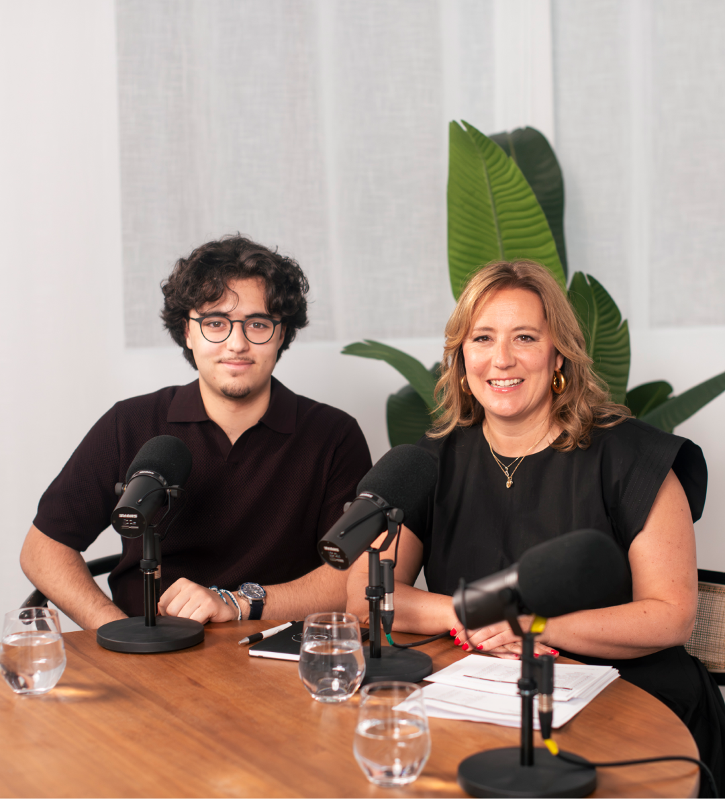
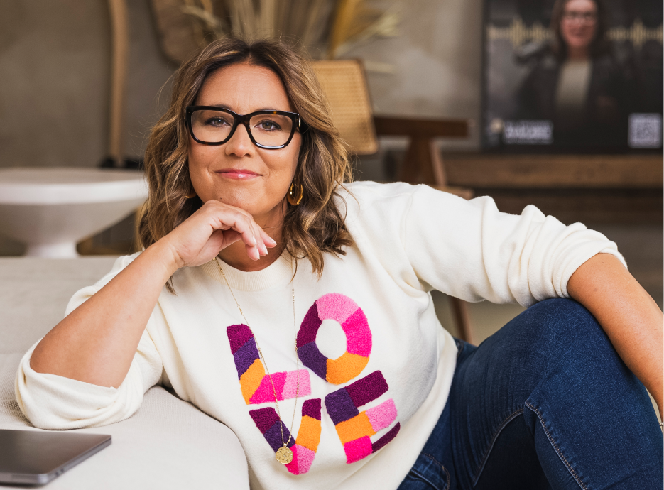
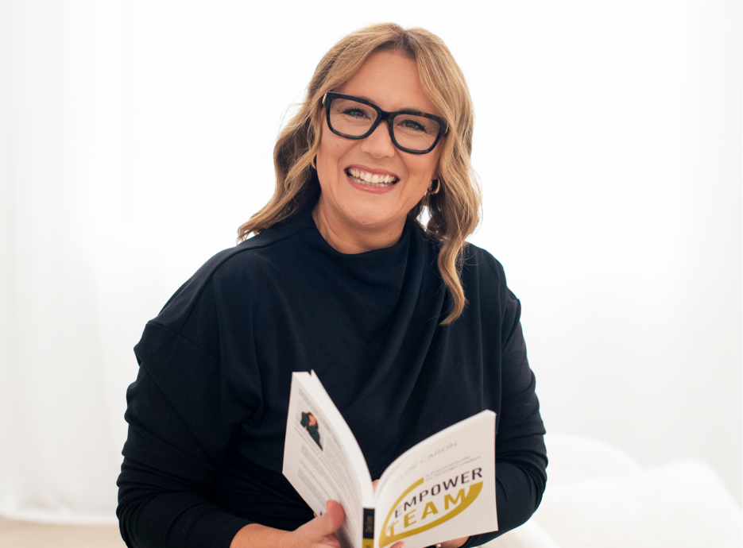

Hosted by Cloé and Thomas, starting September 2026
Des dirigeants, des visionnaires de l'économie se confient sur ce que ça prend pour accomplir de grandes choses. Un mot qui vient en tête pour la saison 2026 : audace. Moments émotifs, conseils pratiques pour entrepreneurs, exclusivités sur les visionnaires qui ont et qui continueront de bâtir le Québec - c'est ce qui vous attend sur Confessions de Leaders.
Découvrir Propulsez votre Inc.
Saison 6 — avec Cloé Caron et Thomas Corbo, dès septembre 2026.

300 G$ d'entreprises changeront de mains d'ici cinq ans.
C'est le plus grand transfert de propriété que le Québec inc. aura connu. Derrière chaque transaction, quelqu'un prend la suite et doit apprendre vite.
Confessions de Leaders existe pour ça : rendre transmissible ce que les dirigeants d'ici ont mis 25 ans à comprendre, pour que la prochaine génération soit prête à prendre le flambeau.
Une entrepreneure et sa relève, aux deux bouts de la même table.
Cloé Caron dirige o2Coaching depuis 25 ans. Thomas Corbo, son fils, arrive dans le métier. Le passage de flambeau dont nos invités viennent parler, il se joue à l'écran pendant qu'on en discute.

5 saisons déjà en ligne. La 6e arrive en septembre.
Les 5 premières saisons s'écoutent intégralement. Qui nous écoute : des dirigeants, des entrepreneurs et des leaders d'organisations.
Des gens qui dirigent, qui racontent la partie difficile.
Chaque épisode, un dirigeant ou un expert vient parler d'un moment où son entreprise a changé. On prend le temps qu'il faut.
- Les origines
- Audace
- La clé dans la porte
- Le mentor
- Le renversement
Une heure, et vous regardez votre propre situation autrement.
Une décision que vous avez à prendre
C'est le plus grand transfert de propriété que le Québec inc. aura connu. Derrière chaque transaction, quelqu'un prend la suite et doit apprendre vite.
Ce que ça a réellement pris
Le temps, les erreurs, ce qu'il a fallu abandonner en chemin. Décision par décision, dans l'ordre où c'est arrivé.
De quoi lancer la conversation
Ce qui se dit dans l'épisode se redit en comité de direction le lendemain. Plusieurs invités repartent avec la question qu'on leur a posée.
Les 5 saisons sont en ligne.
Écoutez où vous voulez. La 6e commence en septembre.